Học tập
Data Science
Cử nhân Khoa học dữ liệu, chuyên ngành phụ Kinh tế. 2024–2028 (dự kiến).
Data Science | Leadership | Apps and Websites
Còn được biết đến là Zohan hoặc Zohan Dam. Tên không dấu: Dam Viet Thanh.
Sinh viên Khoa học dữ liệu, học thêm chuyên ngành phụ Kinh tế tại VinUniversity. Trưởng ban Học vụ Hội đồng Sinh viên, xây dựng website, ứng dụng và tham gia nghiên cứu về giáo dục và đời sống tại Việt Nam.
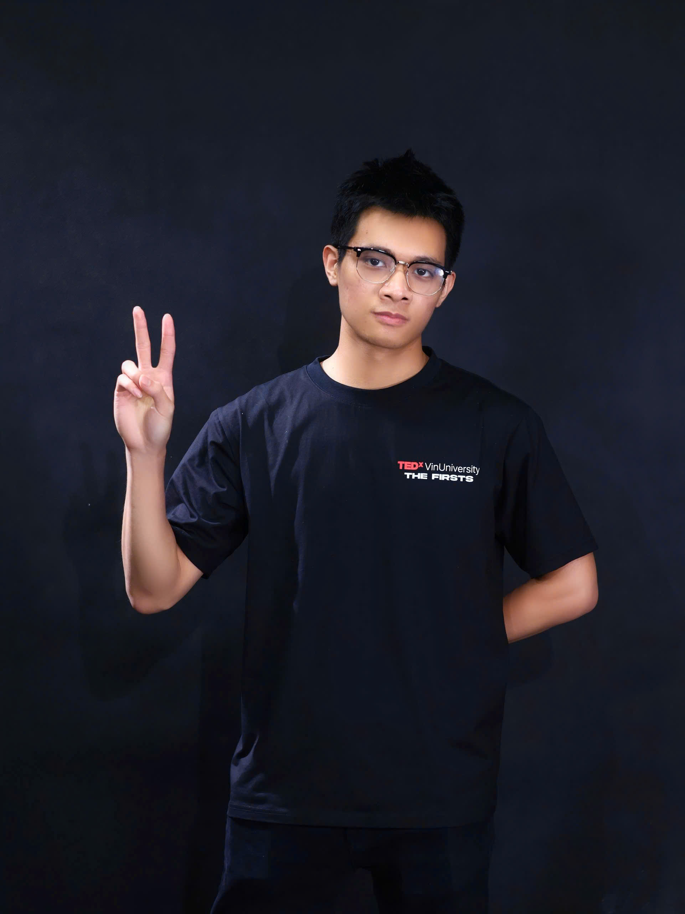
Học tập
Cử nhân Khoa học dữ liệu, chuyên ngành phụ Kinh tế. 2024–2028 (dự kiến).
Lãnh đạo
Xây dựng chương trình cố vấn đồng đẳng: 50 sinh viên dẫn dắt, hơn 700 tân sinh viên và 44 cố vấn học tập.
Xây dựng
Biến ý tưởng thành sản phẩm số thông qua web work và app building.
Danh hiệu
President's List (2025) và Champion of Change (2025, 2026) tại VinUniversity.
Hoạt động gần đây
Dự kiến tháng 11/2026: được Ban Thư ký SEAMEO mời làm đại diện sinh viên duy nhất của VinUniversity tại Korea–Southeast Asia University Leadership Programme và Diễn đàn Giáo dục Gumi lần thứ 4, với tài trợ toàn phần.
Nghiên cứu giáo dục
Được Phó Hiệu trưởng phụ trách học thuật giao nhiệm vụ, phối hợp với Giám đốc Trung tâm Quản lý Giáo dục VinUniversity dẫn dắt nghiên cứu về động lực phát triển của sinh viên, chất lượng giáo dục và phân bổ nguồn lực.
Student Council
Từ tháng 6/2025, dẫn dắt Ban Học vụ và xây dựng VinUni Peer-Advising Program: tuyển chọn, đào tạo và điều phối 50 sinh viên dẫn dắt hỗ trợ hơn 700 tân sinh viên, phối hợp với 44 cố vấn học tập. Làm việc với các đơn vị và lãnh đạo trường về chính sách, chương trình học, đăng ký học và trải nghiệm sinh viên.
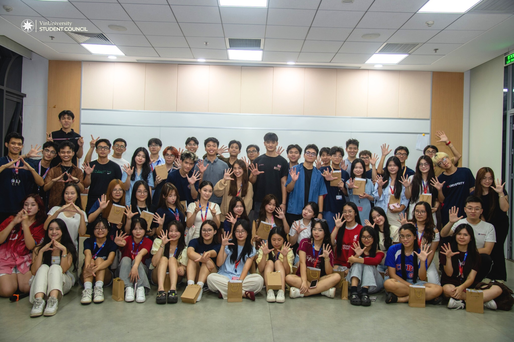
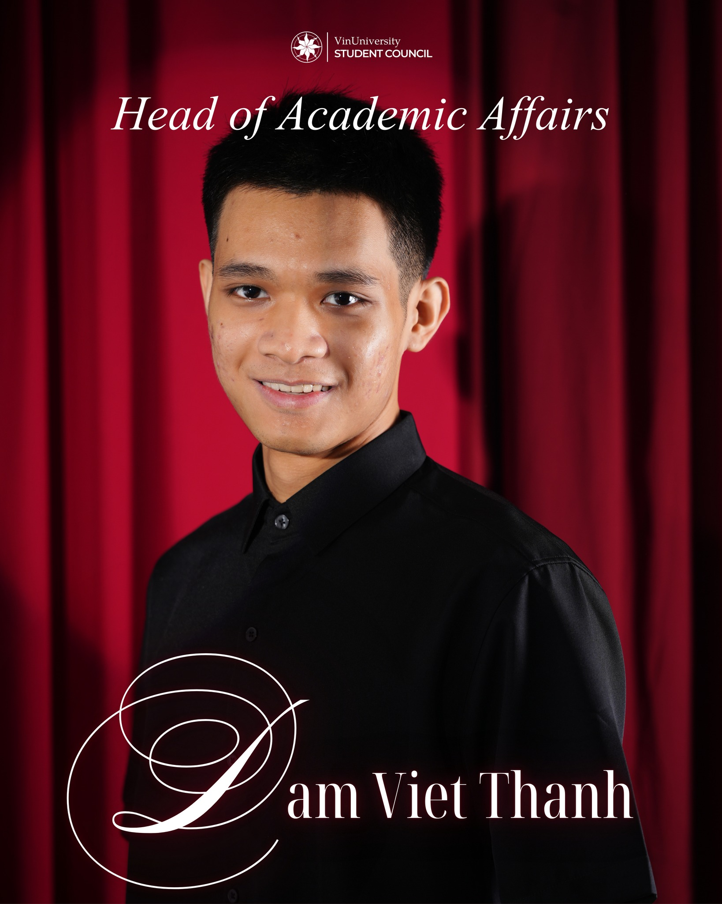
TEDx VinUniversity
Tham gia Content Department của ReThink, TEDx VinUniversity: xây dựng chủ đề, phát triển nội dung, nghiên cứu speaker, làm invitation work và hỗ trợ execution cho The Firsts.
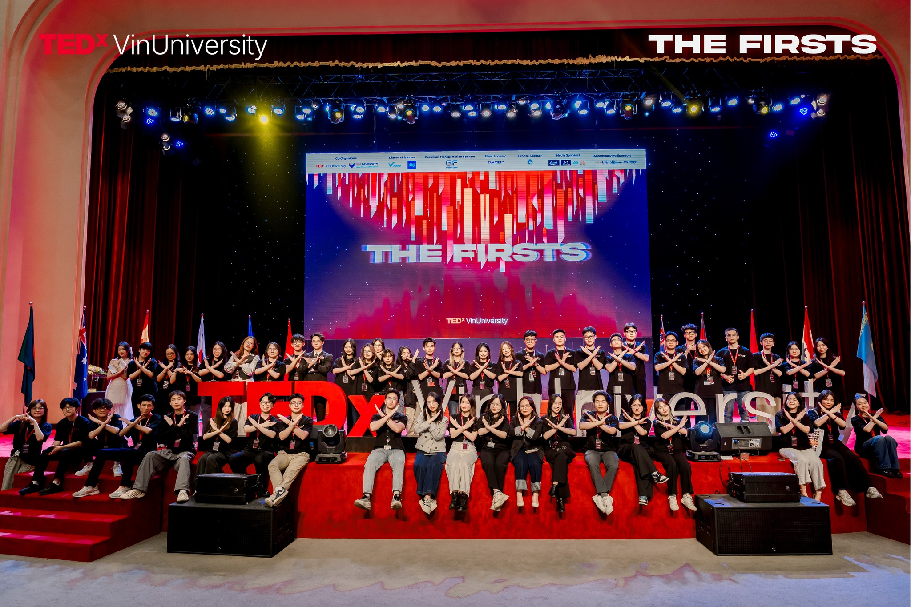
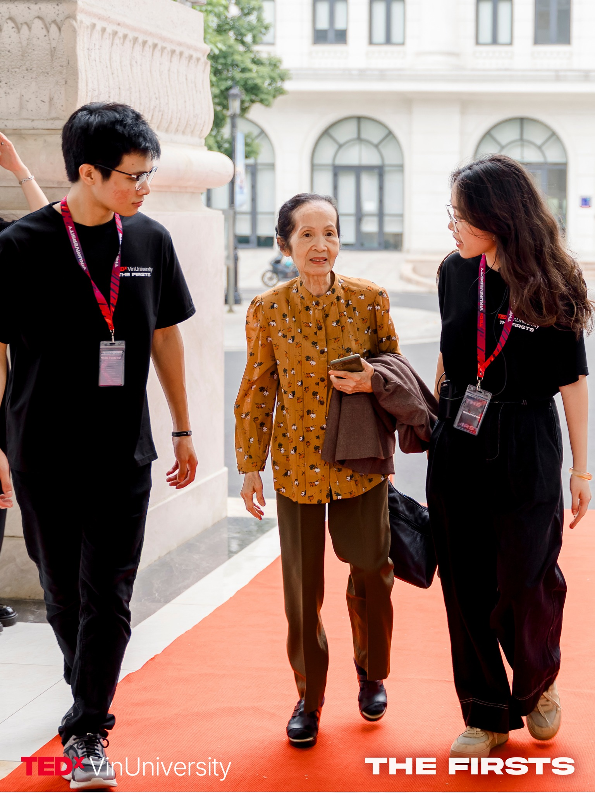
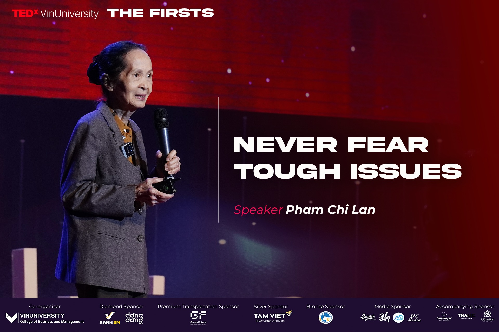
Leadership Bootcamp
Hỗ trợ triển khai Leadership Bootcamp với vai trò Returning Leader, hướng dẫn bốn nhóm sinh viên (khoảng 40 thành viên) qua các hoạt động phản tư và phát triển bản thân.
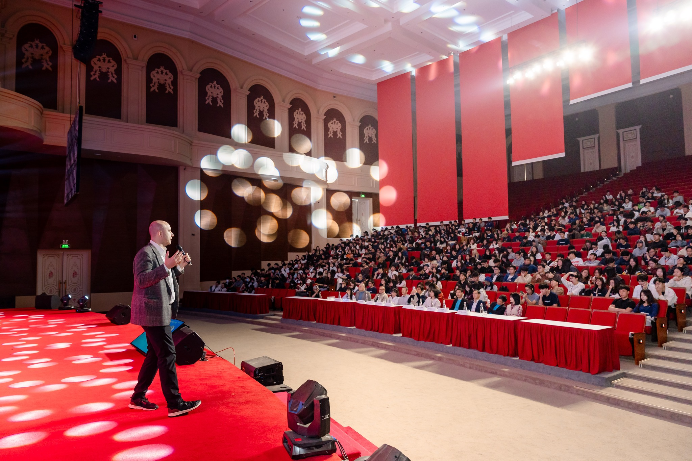
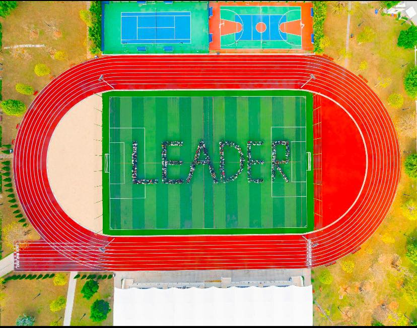
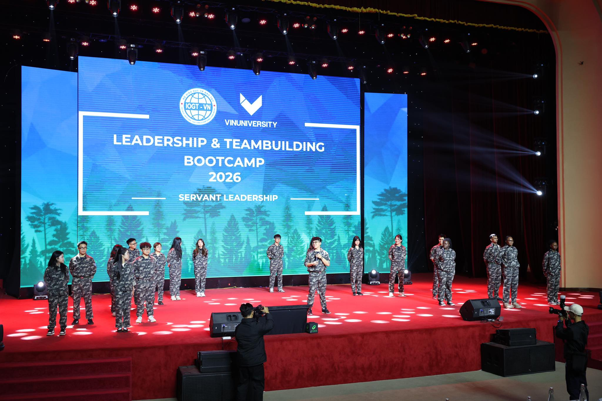
Tim Tebow Night to Shine
Tham gia hoạt động phục vụ cộng đồng cùng Samaritan's Purse và Night to Shine, hỗ trợ chương trình và các hoạt động tại sự kiện.
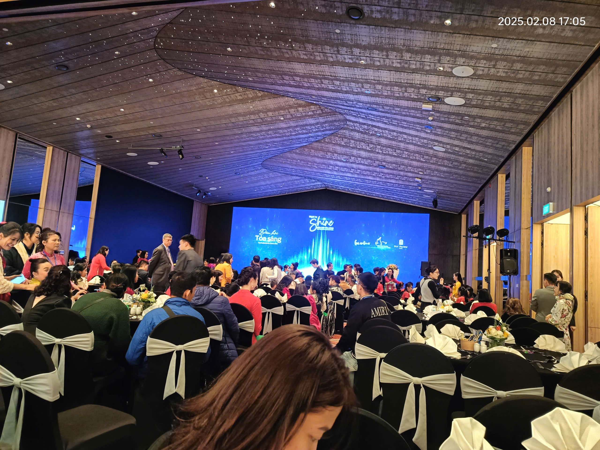
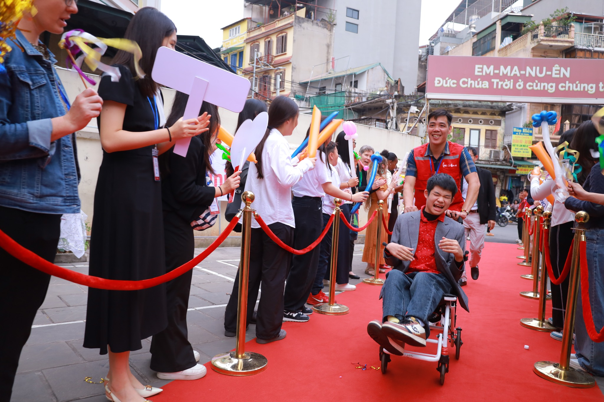
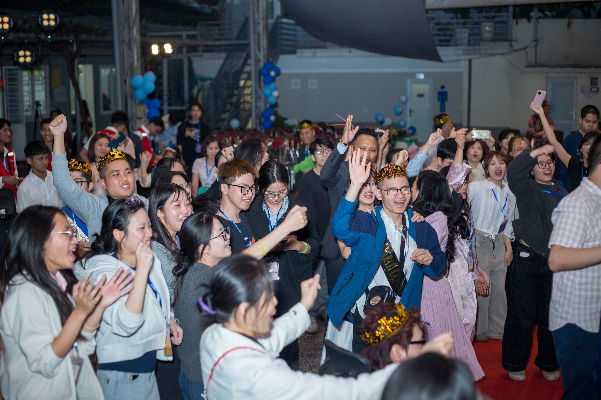